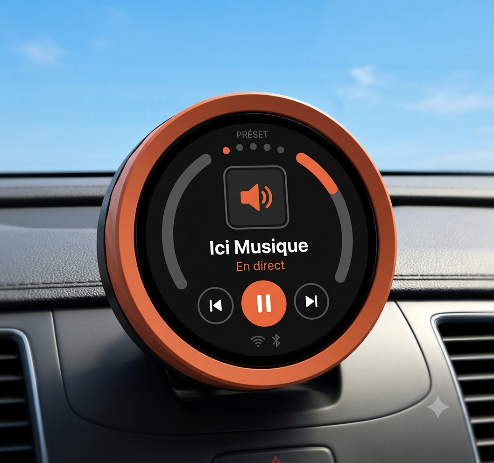

Démarre avec ton char.
Starts with your car.
Joue avant que t'aies fini de reculer dans l'entrée. À chaque fois.
Playing before you've finished backing out of the driveway. Every time.
L'autoradio automatique.
The automatic car radio.
Tu démarres. Ça joue. Ton téléphone reste loin de tes yeux.
You start. It plays. Your phone stays out of sight.
Logiciel libre · sans abonnement Open source · no subscription

Tu connais le manège. Tu rentres dans ton char, tu fouilles dans tes poches, tu déverrouilles, tu cherches ton app, tu touches deux-trois affaires — souvent en roulant, les yeux sur l'écran au lieu de la route. Finalement ça joue… pendant que t'es déjà rendu ailleurs.
Préset te sort de ce manège-là. Pas de gossage d'écran : tu pars, ça joue, t'as les yeux sur la route.
You know the drill. You get in the car, dig through your pockets, unlock, hunt for the app, tap two or three things — often while rolling, eyes on the screen instead of the road. It finally plays… by which point you're already somewhere else.
Préset gets you out of that loop. No screen to fiddle with: you drive off, it plays, your eyes stay on the road.
Joue avant que t'aies fini de reculer dans l'entrée. À chaque fois.
Playing before you've finished backing out of the driveway. Every time.
Donne-lui un horaire : ton Préset démarre tout seul sur le bon préset au bon moment.
Give it a schedule: your Préset starts on its own, on the right preset at the right time.
Pas de notifications, pas de scroll, pas de réseaux sociaux entre deux lumières rouges. Ton téléphone reste dans ta poche — il sert juste de wifi.
No notifications, no scrolling, no social feeds between two red lights. Your phone stays in your pocket — it's just there for the wifi.
Tu l'installes une fois. Après, tu oublies que ça existe.
You install it once. After that, you forget it exists.
Tu les choisis avant l'install. Tu les changes avec les boutons préc. et suiv. sur ton volant. Comme dans le temps.
You pick them before install. You switch with the prev and next buttons on your wheel. Like the old days.
Sur la page web, avec un moteur de recherche ou colle directement l'url.
On the web page, with a search engine. Your favourites, plus four suggestions.
Tu cliques « Installer » dans ton navigateur. Trente secondes plus tard, c'est prêt.
Click “Install” in your browser. Thirty seconds later, it's ready.
Une page apparaît automatiquement sur ton téléphone. Deux champs.
A page opens automatically on your phone. Two fields.
Et c'est tout. À chaque fois.
And that's it. Every time.
Tu peux le bâtir et personnaliser toi-même — les plans sont gratuits sur GitHub. Ou on peut t'en envoyer un déjà assemblé (bientôt).
Les cartes ESP MUSE sont aussi compatibles : un matériel audio tout-en-un, prêt à l'emploi.
Build it yourself — the plans are free on GitHub. Or we can send you one pre-assembled (soon).
ESP MUSE boards work too — all-in-one, finished audio hardware that's ready right out of the box.
La majorité le font aujourd'hui, if faut cependant l'activer. Ton forfait habituel suffit. Ça consomme peu.
Your usual plan is plenty. It barely uses data.
Ton char en est un. Sinon, n'importe quel haut-parleur portatif fait la job.
Your car is one. Otherwise any portable speaker does the job.
C'est tout. Pas d'abonnement à un service. Pas de compte à créer. Pas d'algorithmes de suggestion.
That's all. No service to subscribe to. No account to create.
Si ton wifi tombe, Préset revient.
Si une station meurt, il en prend une autre.
Si on trouve un bug, on l'envoie réparer dans ton char la nuit.
If your wifi drops, Préset comes back.
If a station goes dark, it picks another.
If we find a bug, we send the fix to your car overnight.
C'est plate à dire, mais c'est l'idée : que tu n'aies plus jamais à penser à cette affaire-là.
It's boring to admit, but that's the point: that you never have to think about this thing again.
Logiciel libre · sans abonnement Open source · no subscription